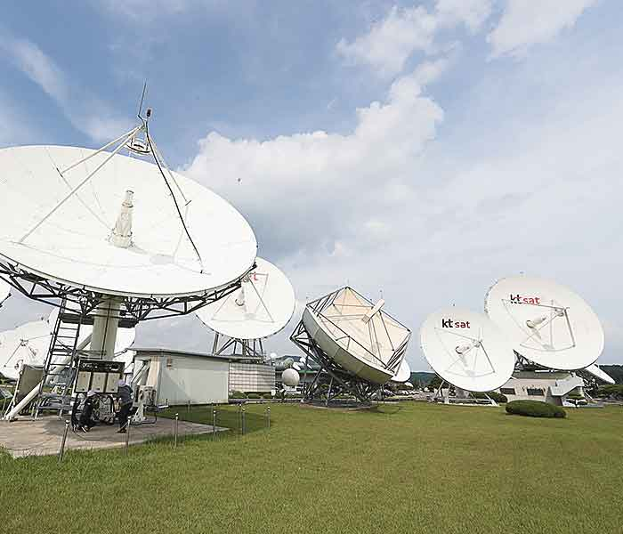
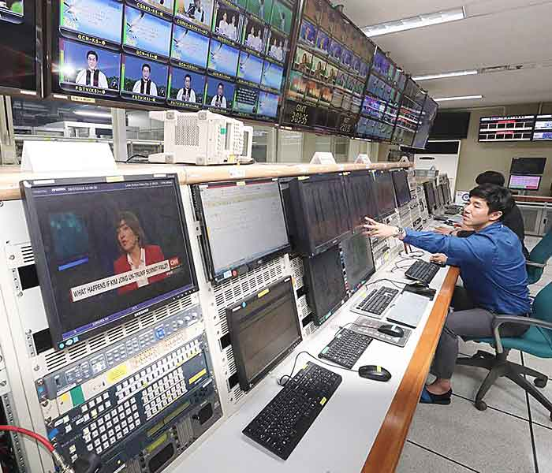

KUMSAN
대한민국 위성 통신시장을 이끌어온 금산위성센터
- 1970년 개국한 우리나라 최초의 위성통신지구국으로, 위성통신을 이용한 국제 통신망을 구축하여 우리나라 국제통신 발달의 선구적 역할을 수행했습니다.
- 1985년 보은위성센터 개국과 1991년 Inmarsat 서비스 제공으로 우리나라위성통신의 대중화를 이끌었습니다.
- 금산위성센터는 개국이래 40여년이 넘는 오랜 시간동안 축적해온 풍부한 경험을 바탕으로 365일 24시간 최상의 위성서비스를 제공 하고 있습니다.
KUMSAN
전 세계와 연결되는 금산위성센터
- 태평양과 인도양 사이에 위치한 지리적 이점으로 전 세계 모든 지역에 위성서비스를 제공 할 수 있습니다.
- 금산위성센터는 아시아 최대의 위성통신센터로 데이터 서비스(VSAT),국제/국내 비디오 서비스, 해상서비스 (MVSAT, GMVSAT, Inmarsat),DTH 송출대행, 글로벌 텔레포트 서비스를 제공하고 있습니다.
